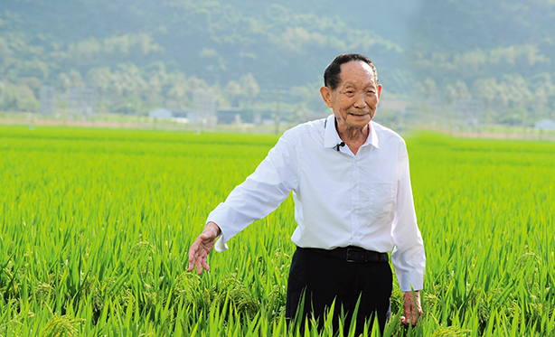

In 1960, during the Great Famine, Yuan Longping saw two starving corpses outside the university gates and was so stimulated that he decided to study grain production and began his own research.
In June 1967, the "Rice Sterility Research Group", headed by Yuan Longping, was established. To increase the effectiveness of their experiments, every winter Yuan and his assistants went to Sanya on Hainan Island to breed the seeds, even using body temperature to breed the germination. On 23 November 1971, his assistants Li Bihu and Feng Keshan found a rare male sterile strain of wild rice in a Hainan test field, and in 1972, Yuan was selected to breed the sterile line Erjiunan No. 1, the first sterile rice line to be used in production in mainland China.
On 10 October 2016, the Super Hybrid Rice directed by Yuan Longping, was tested and accepted by a panel of experts, and the measured mu yield reached 1013.8 kg, creating a new world record for hybrid rice mu yield at high latitudes. on 16 October 2017, Yuan Longping's team's Super Hybrid Rice yielded 1149.02 kg again, setting a world record.
On 10 March 2021, Yuan Longping fell at his hybrid rice research base in Sanya and was transferred to Changsha, Hunan Province, for treatment on 7 April. he died of multi-organ failure at Xiangya Hospital of Central South University in Changsha at 13:07 on 22 May at the age of 91.
